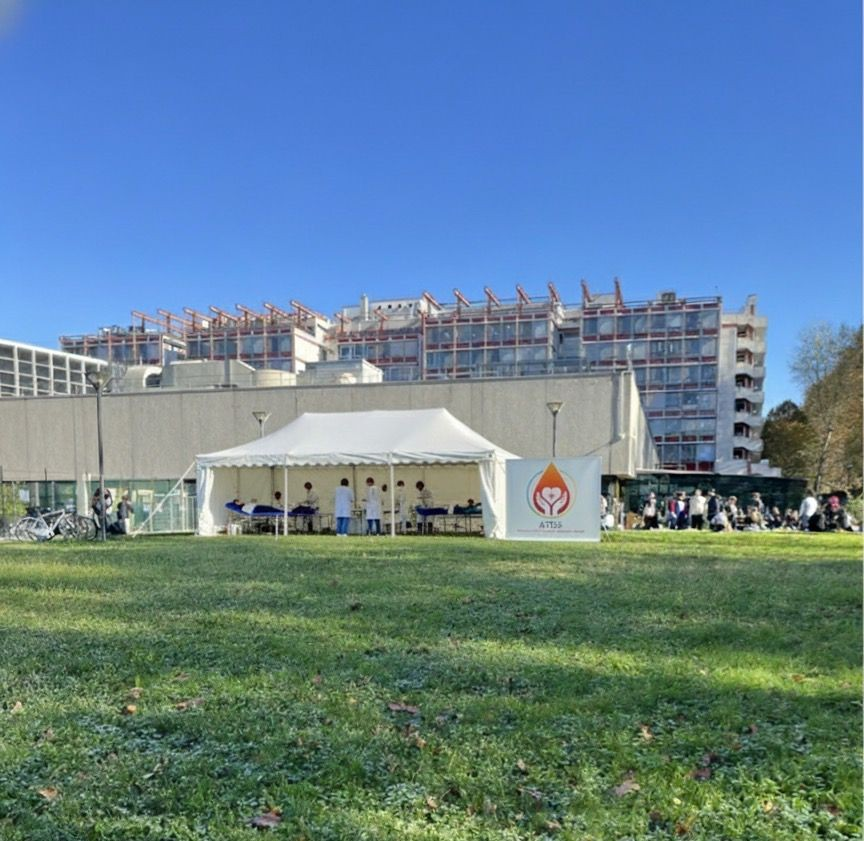
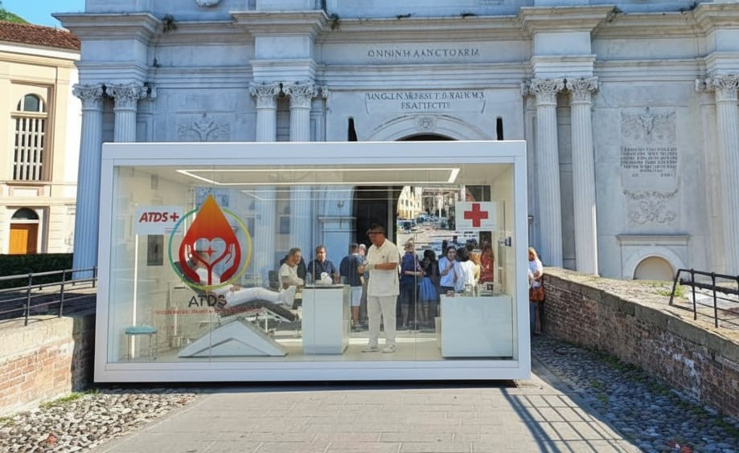
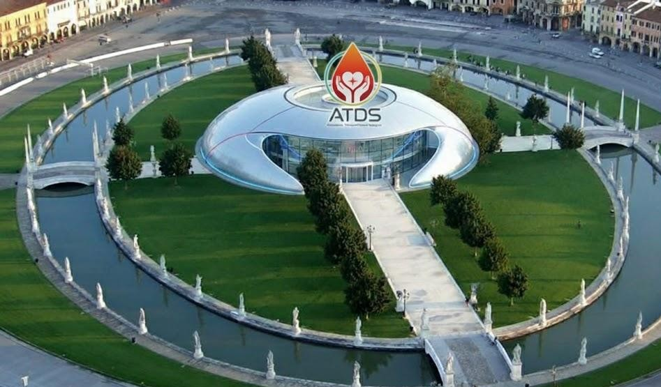

ATDS Piovego
Piccola struttura nel quartiere Piovego, facilmente raggiungibile, con personale qualificato e orari flessibili per le donazioni.
Indirizzo: Viale Giuseppe Colombo, 1, 35131 Padova PD Visualizza su Google Maps
Telefono: +39 0123456789
ATDS Lum250

Piccolo punto donazioni vicino all'Aula LuM250, comodo soprattutto per studenti e personale universitario.
Indirizzo: Via Luigi Luzzatti, 8, 35121 Padova PD Visualizza su Google Maps
Telefono: +39 0123456789
ATDS Stanga

Punto donazioni nel bel mezzo della famosa Stanga, con un ambiente accogliente e pulito, e personale disponibile per ogni esigenza.
Indirizzo: Piazzale Stanga, 35131 Padova PD Visualizza su Google Maps
Telefono: +39 0123456789
ATDS Portello
Punto donazioni nella zona del Portello, appena rinnovato, con facile accesso e un ambiente confortevole per i donatori.
Indirizzo: Via Giovanni Gradenigo, Via del Portello, 35131 Padova PD Visualizza su Google Maps
Telefono: +39 0123456789
ATDS Prato della Valle
Sede principale e punto donazioni in una delle piazze più belle di Padova, con un ambiente accogliente e personale disponibile.
Indirizzo: Prato della Valle, 35141 Padova PD Visualizza su Google Maps
Telefono: +39 0123456789
ATDS Dietro Stazione

Punto donazioni situato dietro la stazione di Padova, comodo per chi arriva in treno e desidera donare sangue in modo rapido, semplice e pulito.
Indirizzo: Via Jacopo d'Avanzo, 23, 35132 Padova PD Visualizza su Google Maps
Telefono: +39 0123456789